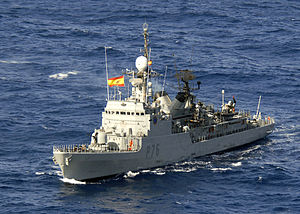

Situación actual
|  | La situación actual de los buques egipcios es una incógnita, aunque el 24 de junio de 2020, la fragata Santa María realizó un ejercicio conjunto junto a la El Suez (F-946) mientras cruzaba el mar rojo con destino a Yibuti desde su base en Rota para integrase en la operación Atalanta.2 En el caso del buque marroquí, entró en octubre de 2017 en las gradas de la factoría de navantia de Cartagena para realizarle trabajos mayores de revisión y mantenimiento.3 Fue el buque insignia de la armada marroquí hasta la entrada en servicio de las fragatas de origen francés de la clase Floréal. En el caso español, todos los buques han dejado de ser corbetas y se las ha adaptado para diversos cometidos: La F-32 Diana (BMA Diana) fue reconvertida a buque de mando de la flotilla de MCM (Medidas Contra Minas), pasando su numeral a M-11, hasta que en junio de 2015 fue dada de baja y se encuentra a la espera de desguace. Las F-31, F-33, F-34, F-35 y F-36 fueron convertidas en patrulleros de altura, pasando sus numerales a P-75, P-76, P-77, P-78 y P-79, respectivamente, y perdiendo parte de su armamento y sensores. La Descubierta (P-75, ex F-31) la Vencedora (P-79. ex F-36) y la cazadora (P-78. ex F-35) fueron dadas de baja en 2009, 2017 y 2018 respectivamente y las dos primeras de ellas pasaron poco después a desguace. |
| RADAR |
|
Sonar |
DE-1160B casco |
| Armamento |
|
 |
 |
 |